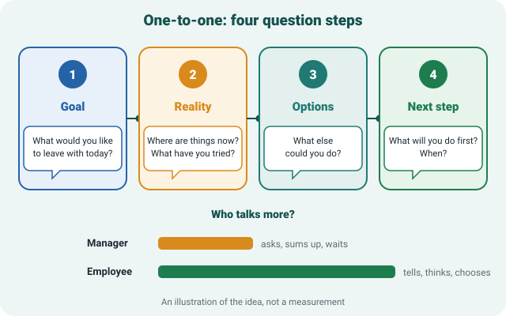

K1 · Listening and understanding › Level 5 Leading
Listen to coach in one-to-one meetings
This lesson completes Sheet 4: One-to-one page. Print template. It builds on Close actions after a meeting (Level 3). Looking after your own wellbeing is covered on tamhonkhoe.com (in Vietnamese).
1. Objectives
- Lead a 20-minute coaching one-to-one in 4 steps: goal, reality, options, next step.
- Tell when to coach and when to give direct instructions.
2. Retrieval warm-up
- What are the 6 boxes of a delegation sheet?
- How is timely feedback different from regular feedback?
Answers
- Result needed; standard; deadline; level of autonomy; resources; checkpoints.
- Timely: right after the event, short. Regular: in one-to-ones, looking back over a few weeks, choosing one thing to improve.
Review: Delegate and follow up.
3. Explanation
Coaching means helping someone find their own solution. You ask and listen more than you tell. People who work out the answer themselves usually remember longer and take more ownership.
The one-to-one belongs to the employee. They choose the topic in advance. Do not use it to hand out new work or read out figures.
Four steps of questions. This order is similar to the GROW model often used in coaching. The questions below are written by this site.
- Goal: "What would you like to leave this meeting with today?"
- Reality: "Where are things now? What have you tried?"
- Options: "What else could you do? If you weren't afraid of getting it wrong, what would you try?"
- Next step: "What will you do first? When? What support do you need from me?"

Three listening habits.
- Wait a few more seconds after they stop talking. Important points often come after a pause.
- Summarise what they said before your next question: "So you mean… is that right?"
- Ask "What else?" The first answer is rarely the whole story.
When not to coach. There are three cases for direct instruction. One: the work is urgent. Two: it involves safety or the law. Three: a new person lacks the basic knowledge. Then explain clearly how to do it, and coach later.
Sheet 4. One-to-one page
- The employee's topicWritten before the meeting.
- Four stepsNote the key point of each step.
- Next step, deadlineChosen by the employee.
- Manager's supportWhat you promised to do.
Once a quarter, use a one-to-one to talk about careers: what they want to learn, where they want to be in 1–3 years.
4. Workplace example
Hypothetical scenario. Ethan leads the maintenance team at a packaging factory. Nina, a technician with 3 years' experience, sets the one-to-one topic: "Press number 2 keeps making my shift late."
In the past, Ethan would have told her how to fix it at once. This time, he asks. Goal: Nina wants a way to cut downtime on press 2. Reality: it stopped 3 times last week, and she has replaced a sensor once. He summarises: "You replaced the sensor and it still stops, right?" Nina nods, then adds: both stops were at the start of the night shift.
Options: Nina comes up with three ideas. Ask the previous shift how they shut it down. Record the temperature at start-up. Propose a check before shift handover. Next step: Nina will record the temperature for the next 5 night shifts. Ethan promises to ask the previous shift for a 10-minute handover with Nina present.
Why this works: Ethan listens long enough for Nina to mention the "night shift" detail. Nina chooses the next step, so she owns it.
5. Practice
Hypothetical scenario. You lead a marketing team at a cosmetics company. Tess, who has 2 years' experience, sets the one-to-one topic: "I feel like I do the same thing over and over and I'm not growing."
Write one question for each step. Write one sentence summarising what Tess says. Say whether this is a time for direct instruction.
Hint 1
What does "growing" mean to Tess? The Goal question should help her say that clearly.
Hint 2
Is this urgent? Is there a safety or legal risk?
Model answer
- Goal: "By the end of this meeting, what would you like to be clearer about in your growth?"
- Reality: "What do you do each week? Which parts do you feel you've mastered?"
- Summary: "So you're doing social media posts well, and now you want to try something harder. Is that right?"
- Options: "Which work in the team would you like to try? Who could you learn from?"
- Next step: "What will you do before next week? How can I support you?"
- Direct instruction? No. It is not urgent and there is no safety risk. This is a time for coaching and a career conversation.
6. Self-check
Choose an answer. Every option has an explanation.
Question 1. An employee opens a one-to-one: "Customers keep complaining about me." Which question fits the first step?
-
Not quite. This is advice, not a question. You do not yet know what they want from the meeting.
-
Correct. Correct. The Goal step helps the person say clearly what they need.
-
Not quite. Jumping into details lets you take over the conversation and start solving it for them.
Question 2. The employee has just finished answering and goes quiet. What should you do?
-
Not quite. Filling the silence too fast can lose an important point they were about to make.
-
Correct. Correct. Important points often come after a pause or after "What else?"
-
Not quite. The first answer is rarely the whole story.
Question 3. When should you give direct instructions instead of coaching?
-
Not quite. This is a perfect time to coach. People follow a path they chose themselves.
-
Correct. Correct. It is a safety issue and the person lacks the basics. Instruct now, coach later.
-
Not quite. It is not urgent and has no safety risk. Coaching helps them find a way that suits them.
Question 4. At the end of a one-to-one, who should choose the next step?
-
Not quite. A step chosen by someone else is easily done half-heartedly.
-
Correct. Correct. People who choose their own next step own it. The manager commits to their part.
-
Not quite. Without a next step, a one-to-one rarely leads to change.
7. Reflection
- In your last one-to-one, who talked more: you or the employee?
- Which of the 4 steps do you use least?
8. Real-world application
In the next 7 days, lead a one-to-one using Sheet 4. Ask the employee to write their topic in advance. During the meeting, count how many times you summarise what they said.
9. Metadata
| skill | K1 · Listening and understanding |
|---|---|
| level | Level 5 · Leading |
| group | N5 |
| framework_map | WEF: Empathy and active listening; Talent management; SkillsFuture CCS: Developing People; Communication; NACE: Leadership; LifeComp: S1 Empathy; S2 Communication (reference only) |
| original | Vietnamese version |
| updated | 2026-11-14 |
Finish the lesson
Mark it as done and the site suggests reviews after 1, 3 and 7 days. The data stays on your device only.
Suggested reviews: